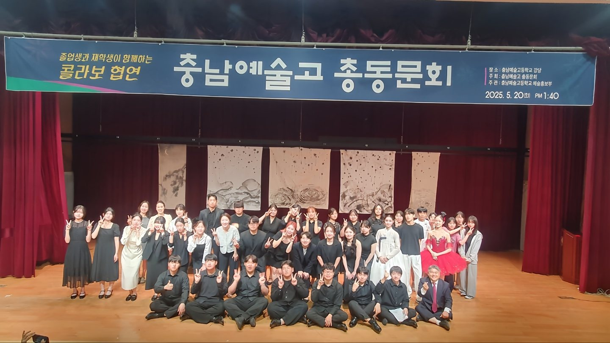
충남예술고등학교 총동문회
2026 정기총회
2026. 10. 24. 토요일 오후 6시 · 더퍼스트 서래향 원베일리
2026 정기총회
진행 순서
01
개회 및 인사
제2대 동문회장
02
제2대 총동문회 활동 보고
2025~2026 주요 사업 10건
03
제2대 총동문회 퇴임식
임원 소개 및 감사
04
제3대 총동문회 취임식
임원 소개 및 조직 체계 변경
05
총동문회 가입 안내
가입 신청 및 회비 납부
06
동문의 밤
만찬 및 교류
02
활동 보고
제2대 총동문회 · 2025~2026 주요 사업
활동 보고
주요 사업 연혁
| No. | 일자 | 사업 |
|---|---|---|
| 01 | 2025. 5. 20. | 졸업생과 재학생이 함께하는 협연 |
| 02 | 2025. 9. 1.~9. 7. | 3과 통합공연 〈결(結)〉 및 제2회 미술과 동문전 |
| 03 | 2025. 12. 6. | 2025 정기총회 및 송년의 밤 |
| 04 | 2025. 12. 17. / 12. 22. | 선후배 멘토링 특강 (미술과·무용과) |
| 05 | 2026. 3. 3. | 개학식 총동문회 장학금 수여 |
| 06 | 2026. 6. 공지 | 개교 30주년 기념행사 동문 참여 |
| 07 | 2026. 6. 29.~7. 10. | 제3회 미술과 동문전 《만개(滿開), 피어나다》 |
| 08 | 2026. 7. | 개교 30주년 기념식 및 예술제 |
| 09 | 2026. 8. 25. | 선후배 멘토링 특강 (음악과) |
| 10 | 2026. 8. 31. / 9. 1. | 모교 교장선생님 이·취임 |
활동 보고 01 · 2025. 5. 20.
졸업생과 재학생이 함께하는 협연
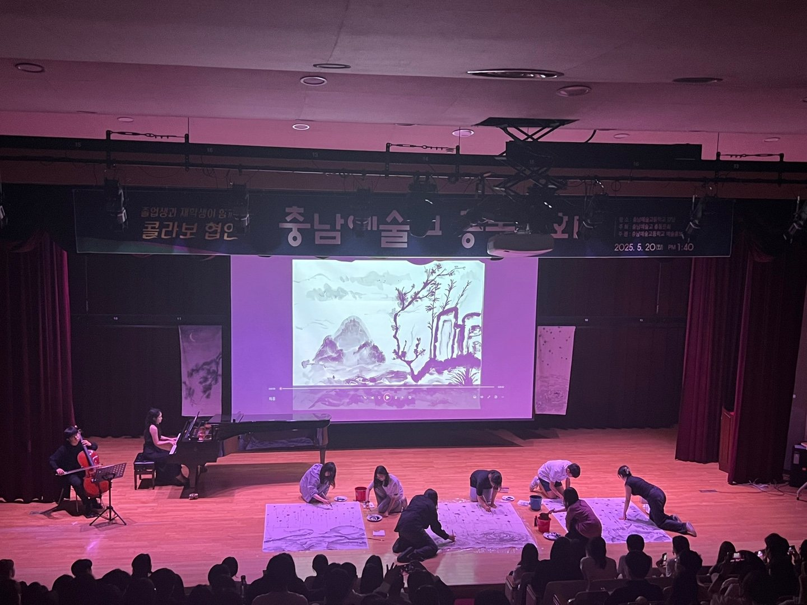
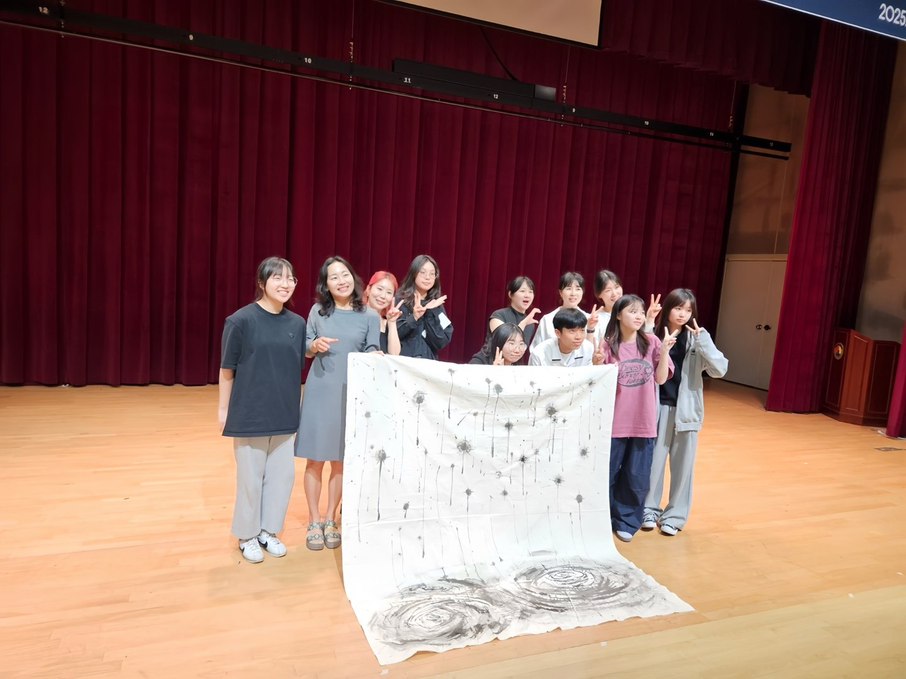
활동 보고 01
졸업생과 재학생이 함께하는 협연
일시
2025. 5. 20.
장소
충남예술고등학교 강당
주최
충남예고 총동문회
졸업생과 재학생이 한 무대에서 협연하는 공연으로 진행하였다.
강당 수용 인원을 고려하여 학년별로 좌석을 배정하였으며, 다른 학년 재학생 다수가 입석으로 관람하였다.
다수의 졸업생이 모교를 방문하여 공연을 관람하였다.
활동 보고 02 · 2025. 9. 1.~9. 7.
3과 통합공연 및 제2회 미술과 동문전
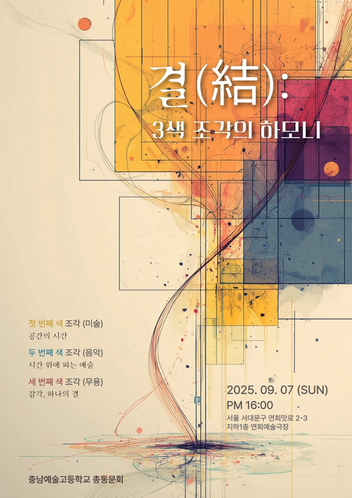
3과 통합공연 〈결(結): 3색 조각의 하모니〉
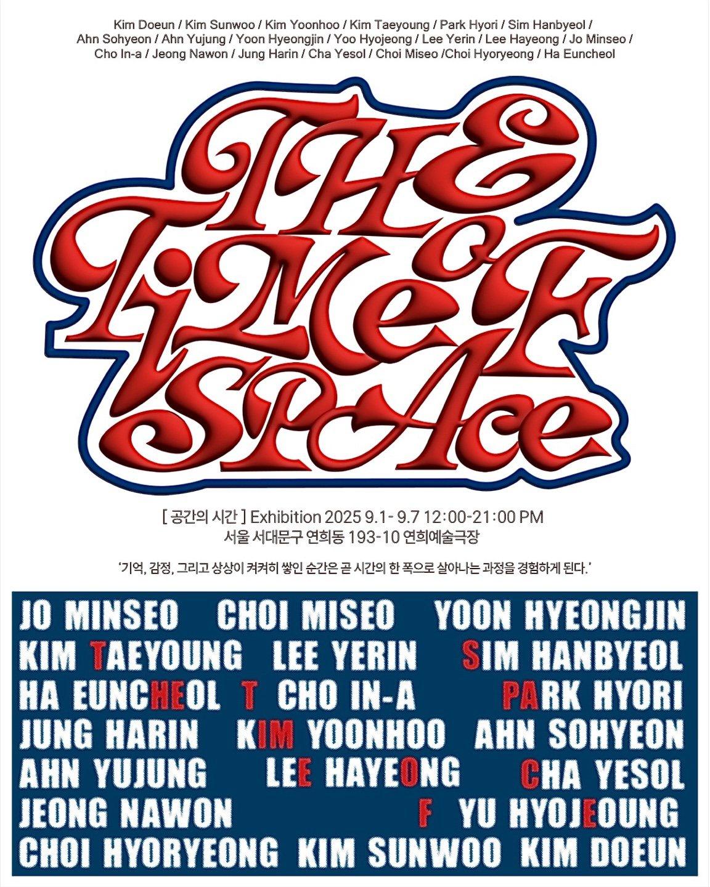
제2회 미술과 동문전 〈공간의 시간〉
활동 보고 02 · 2025. 9. 7.
통합공연 및 전시 클로징
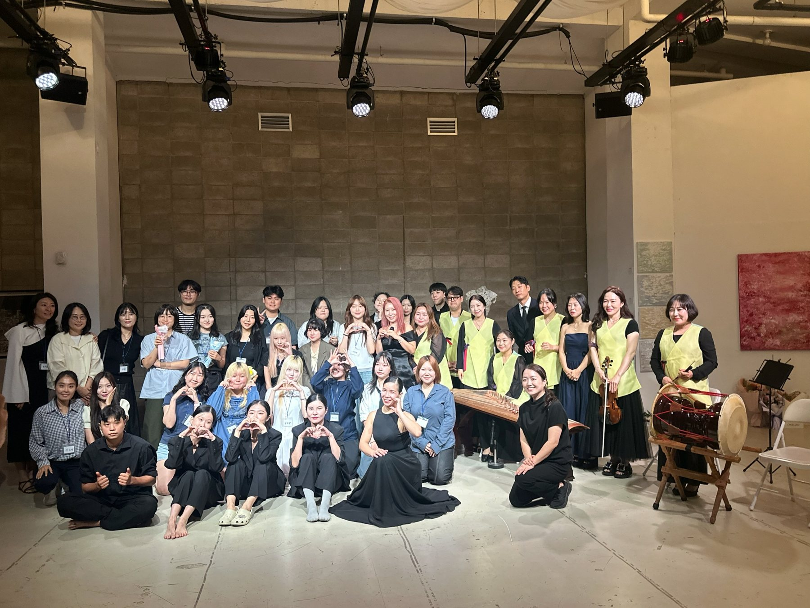
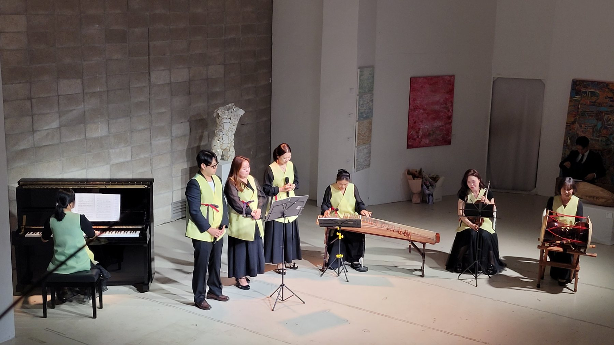
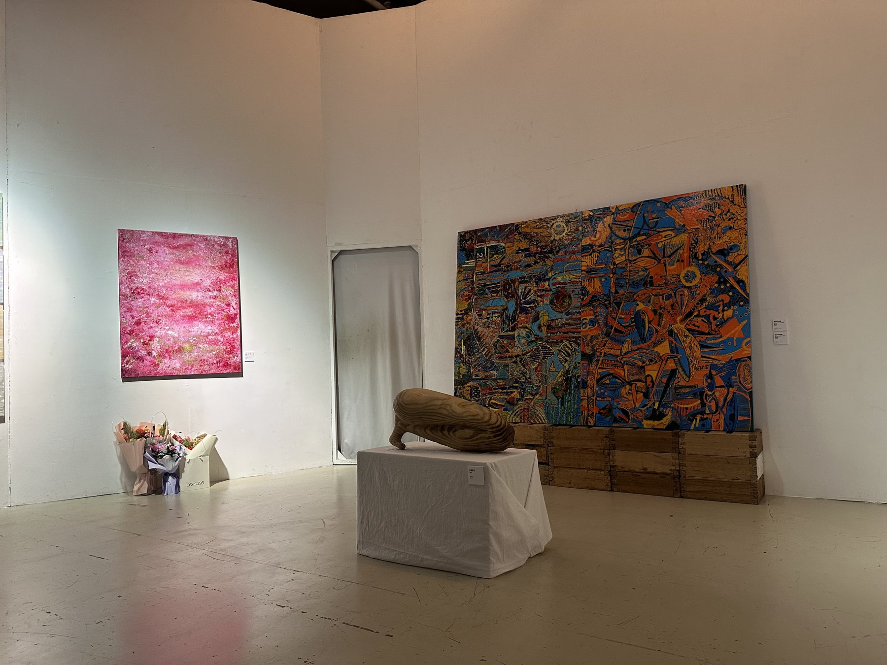
활동 보고 02
〈결(結): 3색 조각의 하모니〉
일시
2025. 9. 7.(일) 16:00
장소
연희예술극장
서울 서대문구 연희맛로 2-3 지하 1층
참여
졸업생 40여 명, 재학생 10여 명
첫 번째 색 조각 · 미술
공간의 시간
두 번째 색 조각 · 음악
시간 위에 피는 예술
세 번째 색 조각 · 무용
감각, 하나의 결
제2회 미술과 동문전을 9. 1.~9. 7. 개최하였으며, 9. 7. 음악과·무용과 합동공연과 함께 전시 클로징 파티 및 작품설명회를 진행하였다.
활동 보고 02
통합공연 운영 및 제작
총괄
정하린
기획
윤지혜, 주세나
진행
김민환
공연 스태프 감독
윤지혜, 이형은
포스터·리플릿·현수막
안소영
공연 음향 지원
장라영
스태프
운영진 일동
참여 운영진 (17명)
정하린 안선혜 조원미 주세나 윤지혜 김민환 장연욱 안소영 한지수 이정은 정성희 장라영 이예린 이형은 정나원 박아인 최미서
활동 보고 02
공연 및 전시 출연진
음악과 · 10명
민병숙 조원미 한지수 심정여 박주영 송윤석 김민환 최영롱 이미엽 박아인
미술과 전시작가 · 20명
김도은 김선우 김윤후 김태영 박효리 심한별 안소현 안유정 윤형진 유효정 이예린 이하영 조민서 조인아 정나원 정하린 차예솔 최미서 최효령 하은철
무용과 · 5명
장미주 주세나 김소정 강민정 남궁진우
활동 보고 03 · 2025. 12. 6.
2025 정기총회 및 송년의 밤
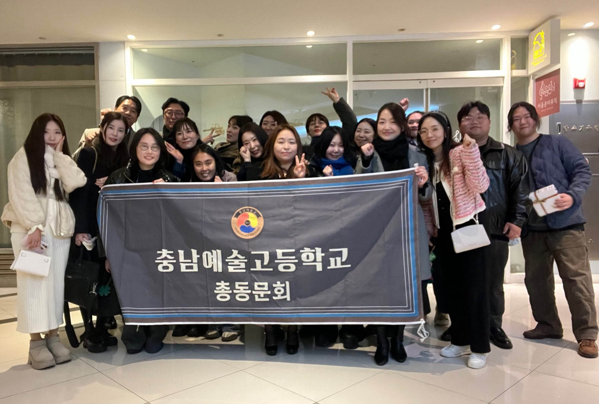
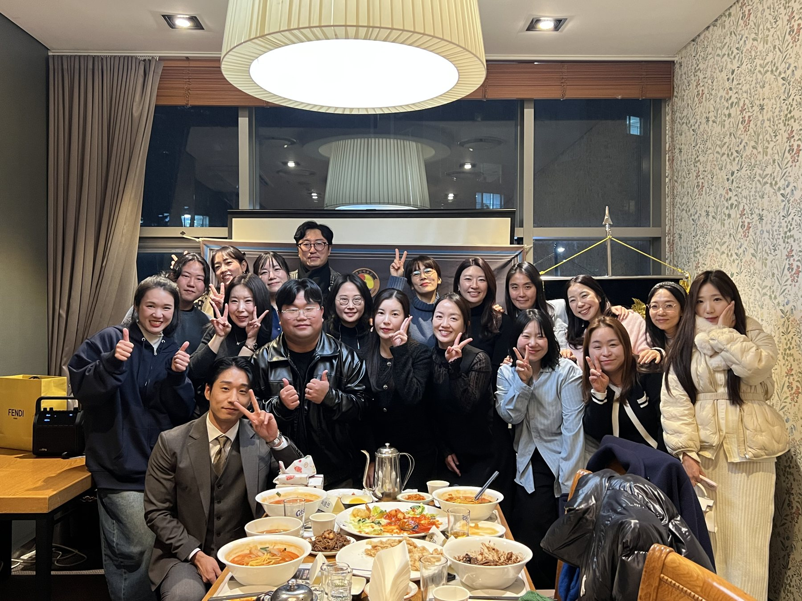
활동 보고 03
2025 정기총회 및 송년의 밤
일시
2025. 12. 6.(토) 18:30
장소
베이징 와이시티점
아산시 배방읍 광장로 210, 4층
참가비
50,000원
2025년 사업을 마무리하는 정기총회와 송년의 밤을 함께 개최하였다.
동문 간 안부를 나누고 교류하는 자리로 운영하였다.
활동 보고 04 · 2025. 12. 17. / 12. 22.
선후배 멘토링 특강 (미술과·무용과)
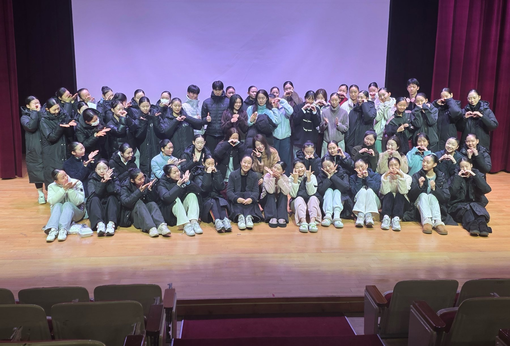
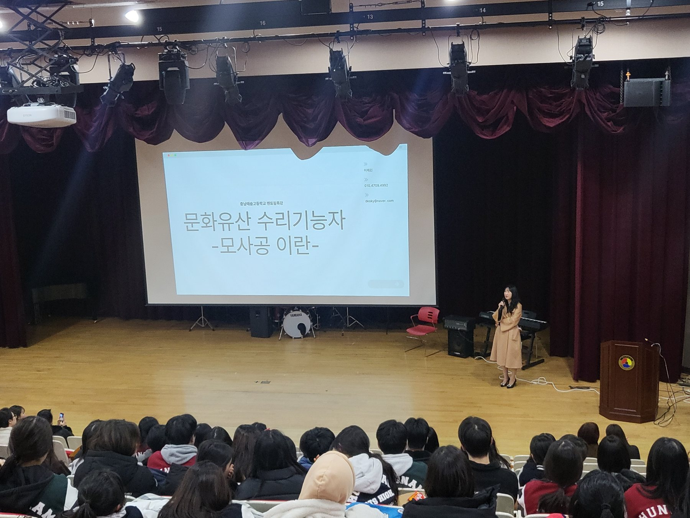
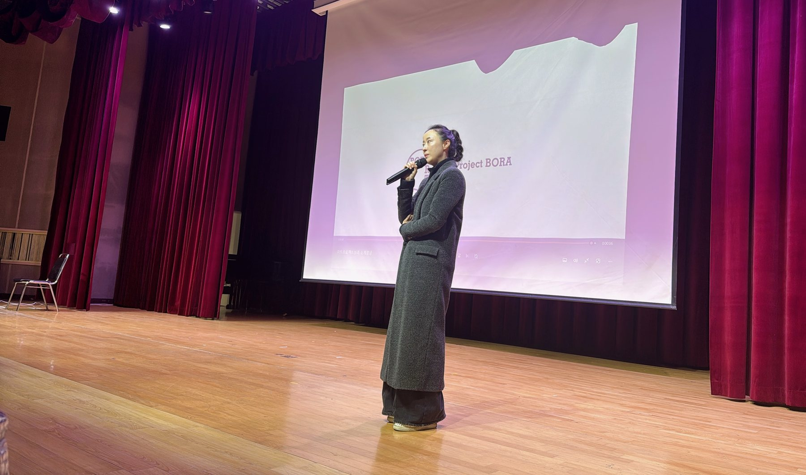
활동 보고 04
선후배 멘토링 특강 (미술과·무용과)
미술과 · 2회차
2025. 12. 17.(수) 15:00~16:30
이예린 (4회) 문화유산수리업 전문가
김도은 (20회) 서울대학교 진학 등 입시 경험 기반 진로·입시 멘토링
안소현 (24회) 다양한 매체로 활동하는 현역 작가
무용과 · 첫 개최
2025. 12. 22.(월) 14:00~15:00
김보라 (1회) 국내외 무대에서 활동하는 현대무용가
장소: 충남예술고등학교 강당 · 선배 동문이 전공 이후의 진로 방향과 현장 경험을 재학생과 공유하였다.
활동 보고 05 · 2026. 3. 3.
개학식 총동문회 장학금 수여
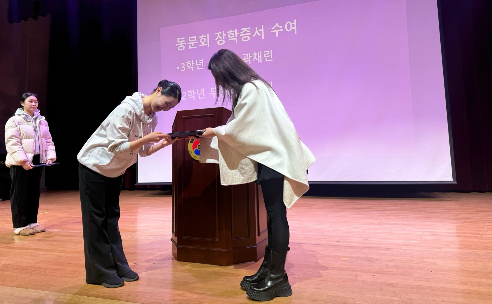
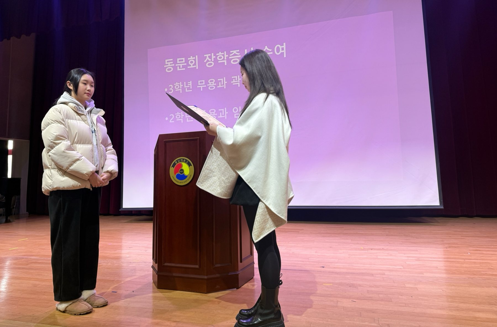
활동 보고 05
개학식 총동문회 장학금 수여
일시
2026. 3. 3. 개학식
대상
2학년·3학년 우등생 각 1명
참석
정하린 동문회장
김민환 운영위원장
총동문회 명의로 재학생 장학금을 수여하였으며, 전년에 이어 연속 시행하였다.
장학금은 동문의 관심과 참여로 조성된 기금으로 운영한다.
활동 보고 06 · 2026. 7.
개교 30주년 기념행사 동문 참여
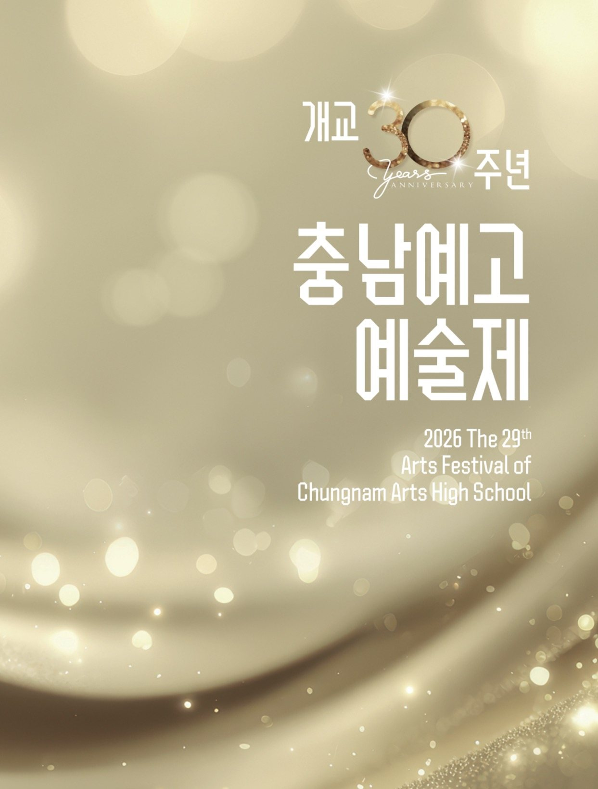
개교 30주년 예술제 프로그램북
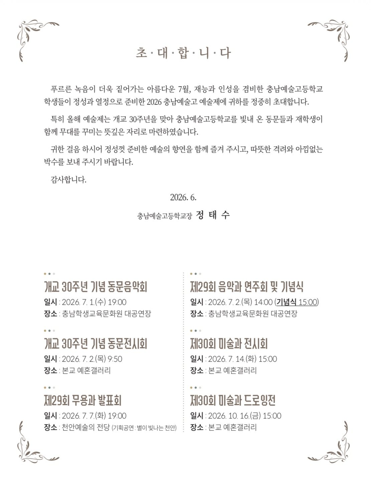
기념행사 초대 및 일정 안내
활동 보고 06 · 참여 동문 (1)
콜라보 프로젝트 및 음악과
콜라보 프로젝트
기획
정하린 (4회)
음악
공채린 (13회, 가야금)
미술
김도은 (20회)
무용
박세진 (18회)
음악과
관현악
송성결 (13회, 첼로)
박가영 (11회, 클라리넷)
이순진 (9회, 플루트)
피아노
김민환 (9회)
김연정 (13회)
김죽현 (13회)
김혜원 (9회)
이솔 (8회)
최미경 (7회)
성악
원지혜 (12회)
활동 보고 06 · 참여 동문 (2)
미술과 및 무용과
미술과
김소이 (27회)
김윤후 (25회)
박종연 (18회)
안소현 (24회)
이예린 (4회)
이규진 (27회)
정하린 (4회)
무용과
한국무용
김현우 (14회)
현대무용
박세진 (18회)
박종현 (16회)
박정우 (23회)
남궁진우 (15회)
최진솔 (18회)
최형규 (18회)
발레
신민용 (19회)
최영운 (19회)
박수종 (21회)
활동 보고 07 · 2026. 6. 29.~7. 10.
제3회 미술과 동문전 《만개(滿開), 피어나다》
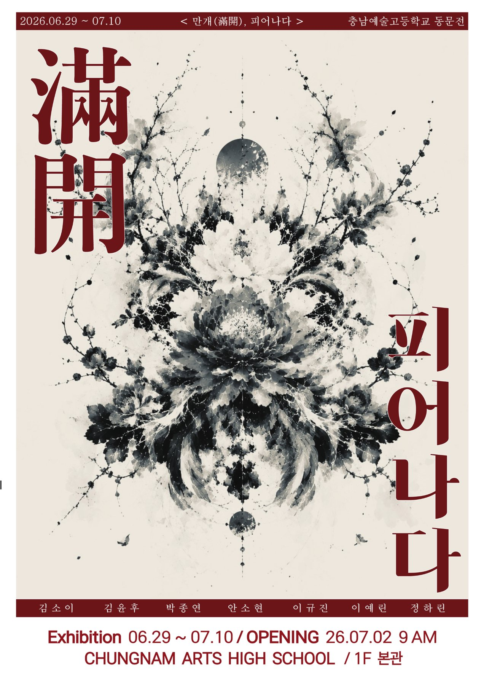
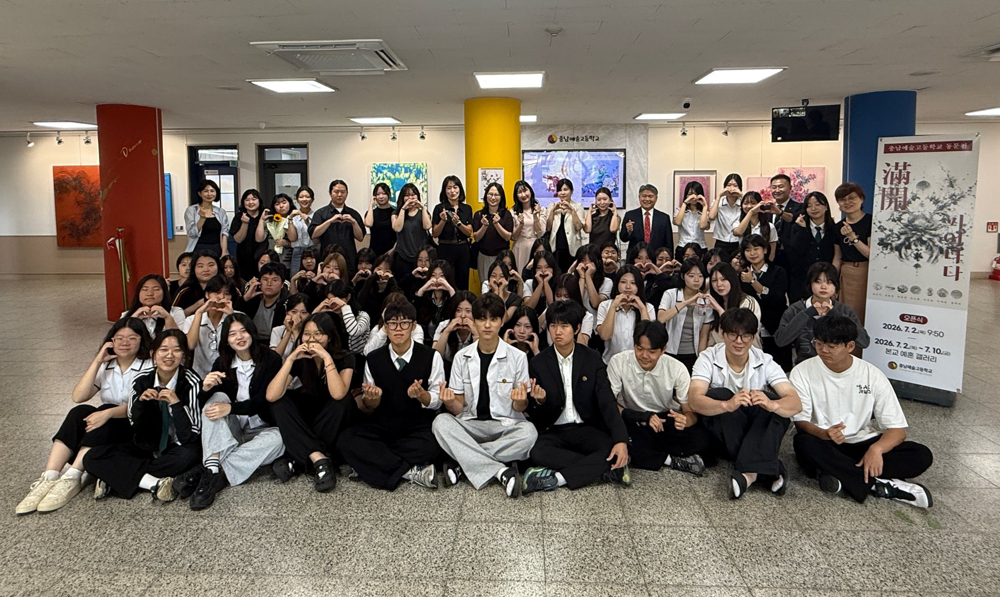
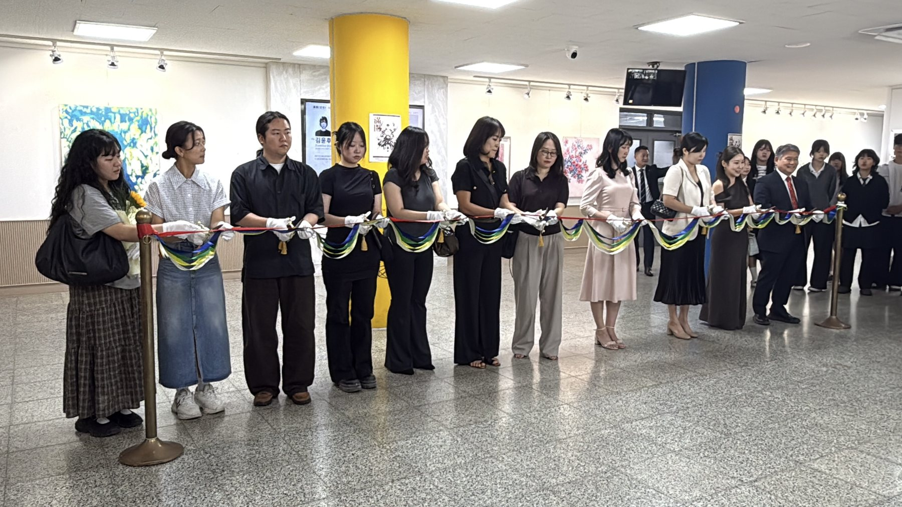
활동 보고 07
제3회 미술과 동문전 《만개(滿開), 피어나다》
전시 기간
2026. 6. 29.~7. 10.
장소
모교 본관
오픈식
2026. 7. 2. 09:50
전시 서문 중
만개(滿開)란, 어느 한순간의 화려함만을 뜻하지 않는다. 보이지 않는 시간과 축적, 그리고 각자의 자리에서 행위해 온 변화와 시간들이 모여 비로소 드러나는 순간이다.
만개(滿開)는 언제나, 이미 시작되고 있다.
활동 보고 08 · 2026. 7.
개교 30주년 기념식 및 예술제
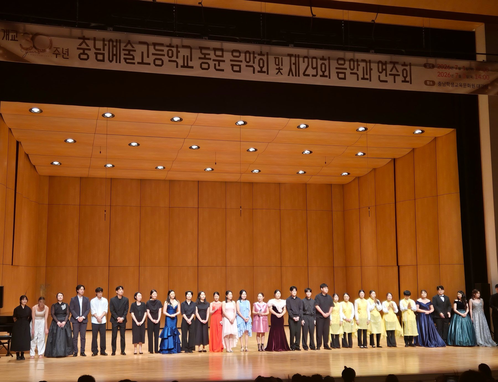
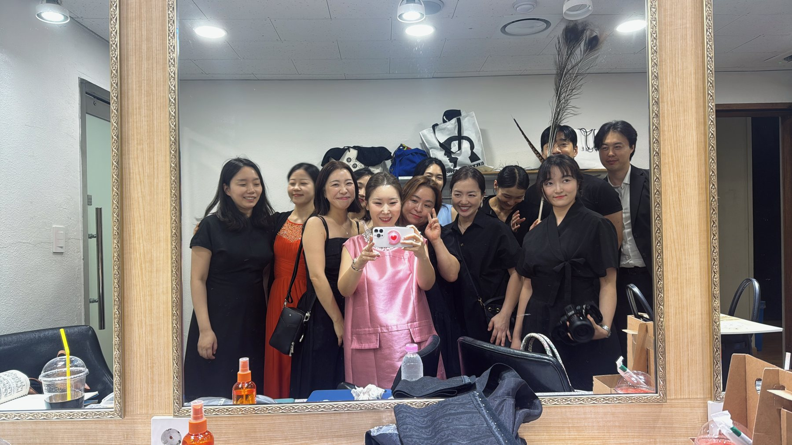
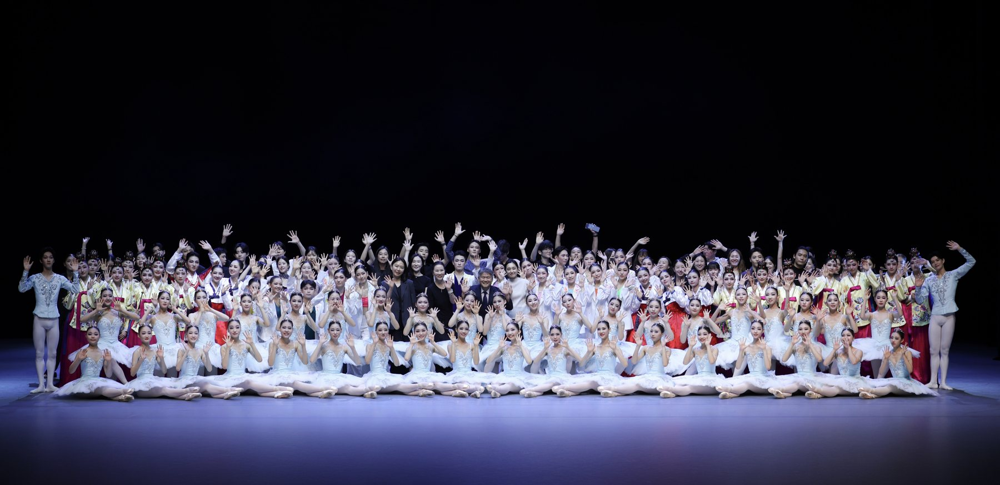
활동 보고 08
개교 30주년 기념식 및 예술제
개교 30주년 기념식과 예술제를 비롯하여 동문이 함께 준비한 음악·미술·무용 동문 공연 및 전시를 7월 중 모두 마무리하였다.
제2대 총동문회 잔여 일정 (7월 공지 기준)
8. 25.
음악과 멘토링 강의 및 동문 운영진 모임
10월
정기총회 및 동문의 밤
위 일정을 끝으로 제2대 총동문회는 공식 임기를 마무리하고, 제3대 총동문회가 출범한다.
활동 보고 09 · 2026. 8. 25.
선후배 멘토링 특강 (음악과)
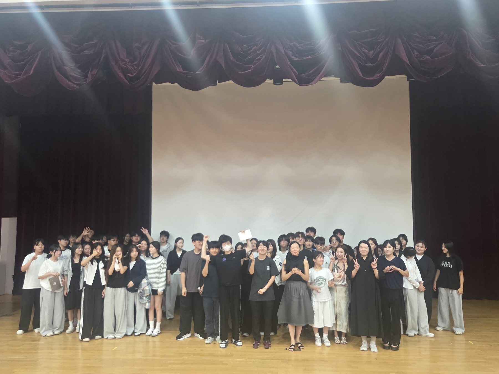
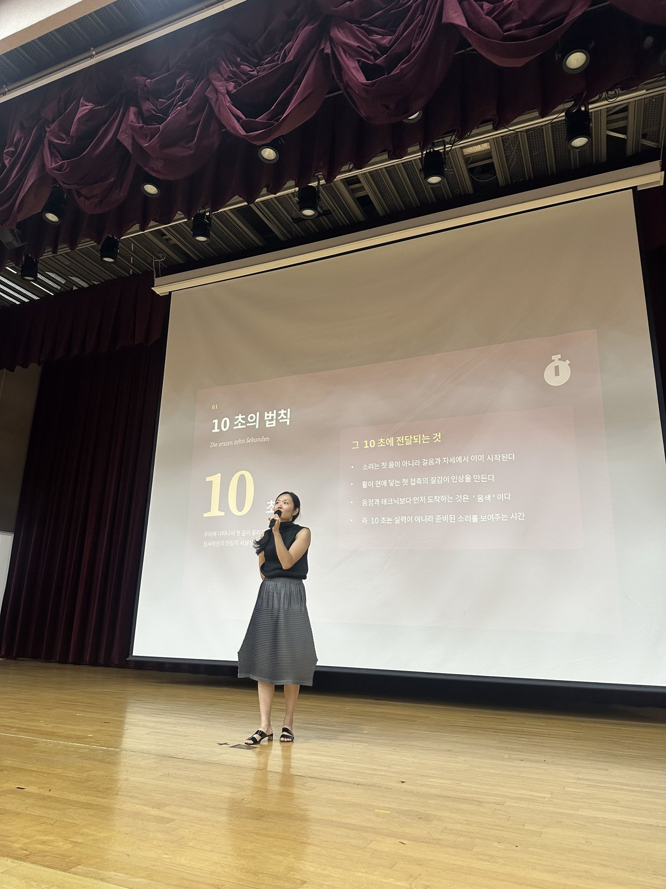
활동 보고 09
선후배 멘토링 특강 (음악과)
일시
2026. 8. 25.
회차
멘토링 특강 3년차
음악과 첫 개최
멘토
길고은 (6기)
이솔 (8기)
공채린 (13기)
매년 이어 온 선후배 멘토링 특강을 음악과로 확대하여 3개 과 모두 운영하였다.
멘토 동문이 현장 활동 경험, 예술가로서의 성장 과정, 국내외 무대 경험을 재학생과 공유하였다.
활동 보고 10 · 2026. 8. 31. / 9. 1.
모교 교장선생님 이·취임
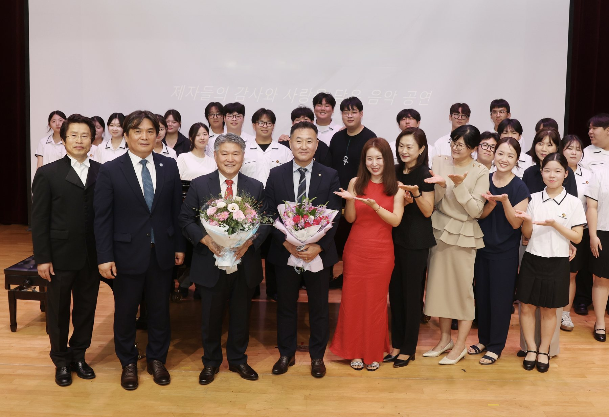
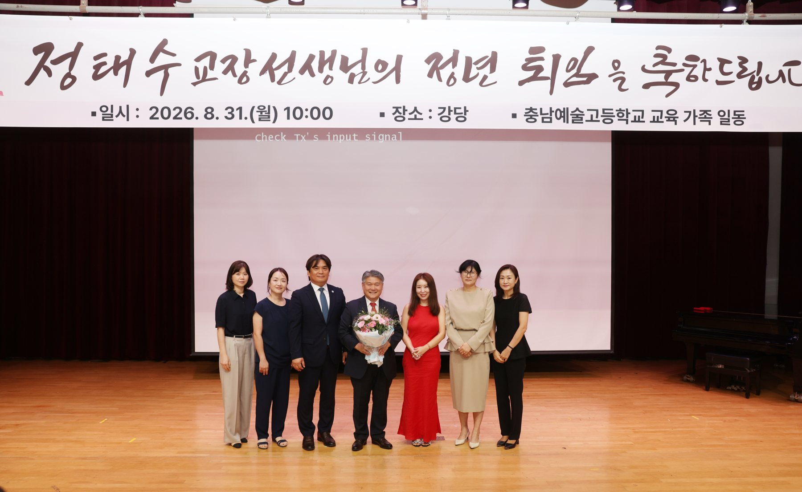
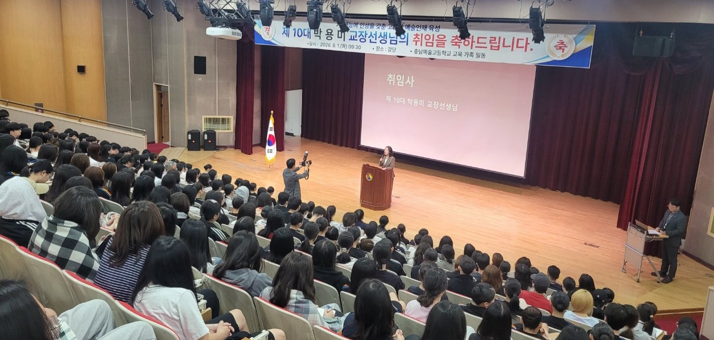
활동 보고 10 · 동문회 소식
모교 교장선생님 이·취임
2026. 8. 31. 퇴임
정태수 교장선생님
모교 발전을 위해 헌신해 주신 노고에 깊이 감사드리며, 앞날의 건강과 행복을 기원한다.
2026. 9. 1. 취임
박용미 교장선생님
취임을 축하드리며, 모교의 새로운 도약을 총동문회가 함께 응원한다.
03 · 04
이·취임식
제2대 총동문회 퇴임 · 제3대 총동문회 취임
퇴임식
제2대 총동문회 임원
회장
정하린 미술과 4기
부회장
음 조원미 (음악과 4기)
미 안선혜 (미술과 1기)
무 주세나 (무용과 10기)
사무국장
윤지혜
(음악과 2기)
운영위원장
김민환
(음악과 9기)
감사
장연욱 (음악과 1기)
안소영 (미술과 4기)
고문
한지수
(음악과 1기, 전 회장)
운영위원
이정은 (미술과 1기)
심희정 (미술과 1기)
정성희 (미술과 1기)
이규섭 (미술과 1기)
장라영 (음악과 2기)
이예린 (미술과 4기)
진희수 (음악과 6기)
이형은 (음악과 7기)
이솔 (음악과 8기)
정나원 (미술과 13기)
공채린 (음악과 13기)
유효정 (25기)
취임식
제3대 총동문회 임원
회장
주세나 무용과 10기
부회장
음 김민환 (음악과 9기)
미 박종연 (미술과 18기)
무 박세진 (무용과 18기)
사무국장
공채린
(음악과 13기)
예술감독
이솔
(음악과 8기)
회계
윤지혜
(음악과 2기)
감사
안선혜
(미술과 1기)
고문
정하린 (전 회장)
자문위원
전대 주요 임원 (역대 회장·부회장·사무국장)
그 외
운영위원 및 이사
취임식
조직 체계 변경 사항
직함 변경
운영위원장
예술감독
직함 변경
운영위원
임원
신설
자문위원
전대 주요 임원을 자문위원으로 선임하여 필요 시 자문을 요청한다.
05
총동문회 가입 안내
충남예술고등학교 총동문회는 2022년 10월 모교 대강당에서 발족식을 열고 공식 설립되었다.
주요 사업
국내외 졸업생 교류 및 동문 찾기 캠페인
총동문회 개최
충남지역 문화예술 발전
재학생 장학사업
선후배 교류 및 공연·전시 사업
가입비
10,000원
총동문회 발전과 재학생 장학사업에 사용
납부 계좌
농협 355-0079-5476-33
예금주 충남예술고등학교 총동문회
가입 신청 및 문의
인스타그램 c_a_h_school
가입 신청서 작성 및 개인정보 수집·이용 동의
06 · 동문의 밤
감사합니다
충남예술고등학교 총동문회